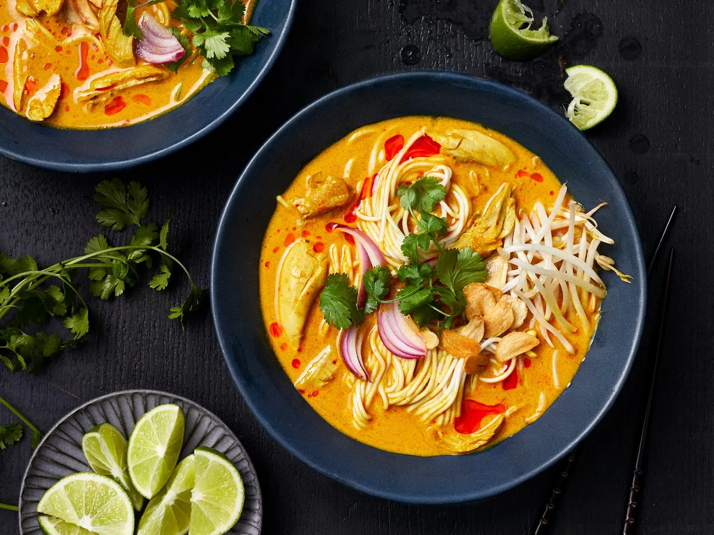

Khao Soi

A simple curry paste gives this northern Thai–inspired soup surprising depth of flavor.
The name means 'cut rice', although it is possible that it is simply a corruption of the Burmese word for noodles – "khao swè" – which may account for the variations. Traditionally, the dough for the rice noodles is spread out on a cloth stretched over boiling water. After steaming the large sheet noodle is then rolled and cut with scissors. Lao khao soi is traditionally made with hand sliced rice noodles in clear soup broth and topped with minced pork and tomato sauce.[3] In some markets in Luang Namtha and Muang Sing vendors still hand cut the noodles. These traditionally cut noodles can also be found in several places in northern Thailand.
Ingredients
Khao Soi Paste
- 2 Thai bird's eye chilies
- 2 medium shallots
- 6 cloves garlic
- 1-inch piece ginger
- 1/4 cup cilantro
- zest of 1 lime
- 2 teaspoons ground turmeric
- 2 teaspoons ground coriander
- 1 teaspoon curry powder
- 2 tablespoons shrimp paste
Soup
- 2 tablespoons vegetable oil
- 1 pound boneless, skinless chicken thighs (sliced)
- 2 tablespoons Thai red curry paste
- 4 cups low sodium chicken stock
- 2 teaspoons brown sugar
- 14 ounces unsweetened coconut milk
- 3 tablespoons fish sauce
- 1 pound fresh Chinese egg noodles
Garnish
- thinly sliced shallots
- lime wedges
- pickled mustard stems/greens
- crispy noodles
- chopped cilantro
- Thai chili paste
Instructions
- Add all the curry paste ingredients to a food processor and pulse until you get a smooth paste
- Heat oil in a large pot over medium high heat. Add 2 tablespoons vegetable oil and stir-fry the chicken until browned. Remove from the pot and set aside. To the fat left in the pot, add the paste. Fry for 3-5 minutes, until fragrant. Add the canned Thai red curry paste, broth, and brown sugar, and bring to a boil.
- Reduce the heat to low. When the broth is at a low simmer, add the coconut milk and fish sauce. Add the chicken back to the broth.
- Meanwhile, cook the noodles according to package instructions.
- To serve, divide the noodles among 4 bowls. Cover with chicken and broth, and garnish with sliced shallots, lime wedges, pickled mustard greens, fried noodles, cilantro, and Thai chili paste.